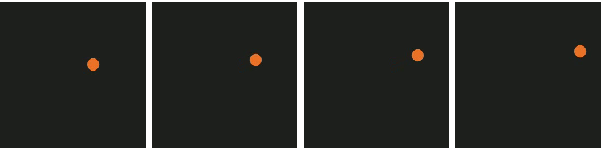

Why this model and probe
Frozen weights, so probes read V-JEPA 2 only
Linear probes, so the code must be linear
Held-out means three things
New clips rule out memorised examples
New values rule out steering to seen knots
New contexts rule out clip-specific edits